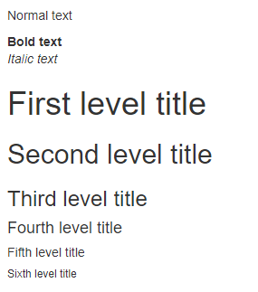

{shiny} is powered by Bootstrap, the main components are customizable using a large number of variables. Below, we give some examples of parameters that you can modify to change the appearance of elements created by {shiny} functions.
Status
Buttons like several components in Bootstrap are styled wit statuses colors, there’s 5 options: primary, success, danger, warning and info. It’s possible with bs_vars_color() to modify theses colors to alter all components depending on them:
{shiny} code:
btn <- function(x) actionButton( x, x, class = paste0("btn-", x) ) colors <- tagList( btn("primary"), btn("success"), btn("info"), btn("warning"), btn("danger"), tags$p(""), shinyWidgets::progressBar( "pb1", value = 80, status = "primary", display_pct = TRUE ) )
{fresh} variables:
bs_vars_color( brand_primary = "#112446", brand_success = "#7bc043", brand_info = "#0392cf", brand_warning = "#f37736", brand_danger = "#ee4035" )
With default theme, it will render as:
With our {fresh} theme it will look like:
wellPanel
In {shiny}, wellPanel create a box with a grey background, it’s also used in sidebarPanel(), you can change these default settings with bs_vars_wells():
{shiny} code:
well <- wellPanel( "This is a wellPanel (or sidebarPanel)" )
{fresh} variables:
bs_vars_wells( bg = "#FFF", border = "#3f2d54" )
With default theme, it will render as:
With our {fresh} theme it will look like:
Global
bs_vars_global() allow to define some global options like background and text color, but also the number of columns in the grid system (when using fluidRow) :
{shiny} code:
grid <- tagList( fluidRow( tags$div( class = "col-sm-15", wellPanel("width=15 - 2 columns") ), tags$div( class = "col-sm-15", wellPanel("width=15 - 2 columns") ) ), fluidRow( tags$div( class = "col-sm-10", wellPanel("width=10 - 3 columns") ), tags$div( class = "col-sm-10", wellPanel("width=10 - 3 columns") ), tags$div( class = "col-sm-10", wellPanel("width=10 - 3 columns") ) ), fluidRow( column(width = 6, wellPanel("width=6 - 5 columns")), column(width = 6, wellPanel("width=6 - 5 columns")), column(width = 6, wellPanel("width=6 - 5 columns")), column(width = 6, wellPanel("width=6 - 5 columns")), column(width = 6, wellPanel("width=6 - 5 columns")) ) )
{fresh} variables:
bs_vars_global( grid_columns = 30, grid_gutter_width = "15px" )
In the first two examples, we can’t use column because it’s limited to a maximum width of 12.
With default theme, it will render as:
With our {fresh} theme it will look like:
Here we now have a grid system where it’s possible to have 5 columns.
tabPanel
Default tabPanel can be customized with bs_vars_tabs(), if type = "pills" in tabsetPanel, use bs_vars_pills(). Some options are common to both and can be set in bs_vars_nav().
{shiny} code:
tabs <- tabsetPanel( tabPanel("Plot"), tabPanel("Summary"), tabPanel("Table") )
{fresh} variables:
bs_vars_tabs( border_color = "#112446", active_link_hover_bg = "#FFF", active_link_hover_color = "#112446", active_link_hover_border_color = "#112446", link_hover_border_color = "#112446" )
With default theme, it will render as:
With our {fresh} theme it will look like:
Font size
Font size can be set with bs_vars_font, the argument size_base is the base font size, meaning that other sizes are calculated from this value, nonetheless you set absolute size for headings if you want.
{shiny} code:
{fresh} variables:
bs_vars_font( size_base = "12px" )
With default theme, it will render as:

With our {fresh} theme it will look like:

Modal
Modal create with modalDialog can be customized with bs_vars_modal(), you can change the width of the window, the overlay color behind the modal and its opacity.
For example, here’s a modal with 80% width and an opaque background:
bs_vars_modal( md = "80%",backdrop_bg = "#112446", backdrop_opacity = 1, header_border_color = "#112446", footer_border_color = "#112446" )
With default theme, it will render as:

With our {fresh} theme it will look like: